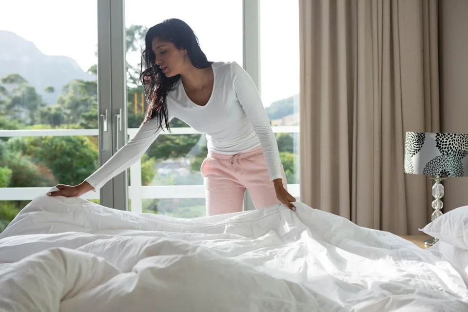
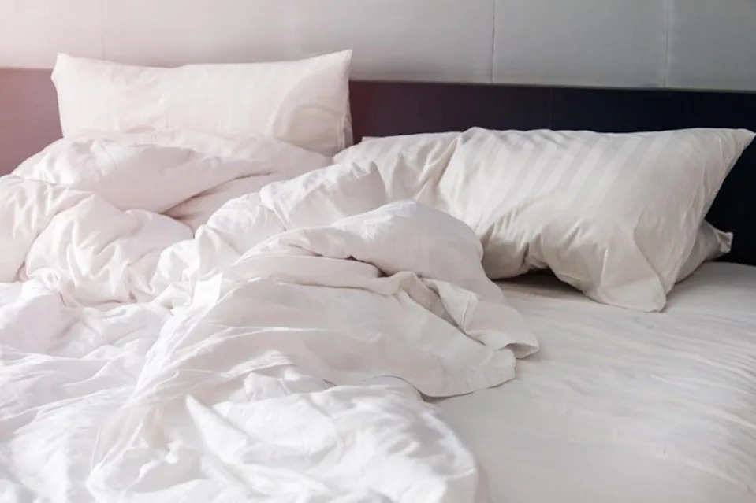
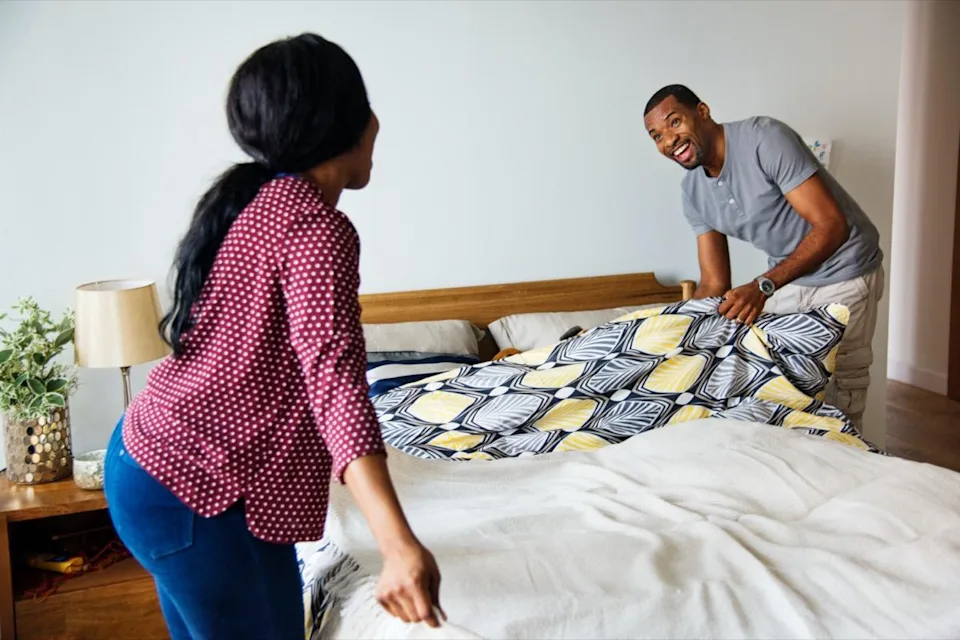

Never Do This Morning Chore If You Have Allergies, Study Warns
Maybe you're up and making coffee five minutes before your alarm even goes off. Perhaps you're a fan of hitting snooze five or six times before finally shuffling to the shower. You could even be someone who beelines for the door with breakfast in hand without so much as a glance in the mirror. Whatever your morning routine is, it's likely personal to you and how you feel when you wake up. But if you're someone who suffers from allergies, take note: There's one chore you may want to hold off on until after morning. Read on to see which surprising task shouldn't be one of the first things you do with your day.
You should never make your bed first thing in the morning if you suffer from allergies.
Making your bed as soon as you get out from under the covers is one of the first tasks we learn as children. But according to a 2006 study from Kingston University in the U.K., the age-old duty of tidying up your sleeping space may not be good for your health if you have sensitivities or allergies.
The researchers say the reason to keep your sheets unkempt is because of microscopic organisms known as dust mites. While they live all around us in every room of the house, they especially love the environment created by your bed, where it's estimated a colony of 1.5 million of them is happily feasting on the dead skin cells you've shed from your body at any given time. Fortunately, dust mites aren't a problem for most people, but some people can experience asthma, itchy eyes, coughing, and sneezing when they inhale them—especially when they're kicked up into the air while making the bed.
Holding off on making your bed can help kill off more dust mites by drying them out.
Of course, your parents warned you that leaving your bed unkempt was one of the worst offenses of a messy room. But according to a computer model developed by the researchers, it turns out leaving your sheets and covers askew could also have a bit of a disinfecting effect when it comes to dust mites.
"We know that mites can only survive by taking in water from the atmosphere using small glands on the outside of their body," Stephen Pretlove, PhD, the study's lead researcher, told the BBC when the research was released. "Something as simple as leaving a bed unmade during the day can remove moisture from the sheets and mattress so the mites will dehydrate and eventually die."
Some experts disagree that the tactic can have much of an effect on dust mites.
The researchers admit that their tests were conducted in the relatively dry climate of the U.K., meaning that this advice wouldn't hold as well in humid climates like the tropics. But even if some may be excited by the prospect of getting to shirk their first daily task, some experts pointed out that keeping your bed free of the allergy-inducing organisms may not be as simple as not making your bed in the morning.
"It is true that mites need humid conditions to thrive and cannot survive in very dry (desert-like) conditions," Andrew Wardlaw, PhD, a professor from the British Society for Allergy and Clinical Immunology who wasn't involved in the research, told the BBC. "However, most homes in the U.K. are sufficiently humid for the mites to do well, and I find it hard to believe that simply not making your bed would have any impact on the overall humidity."
Lower your house's humidity and regularly wash your sheets to help keep dust mites under control.
Even if you're still unsure about holding off on making your bed, experts say there are other ways you can help keep dust mites under control in your sleeping space. The best approach might be simply holding off on pulling back your sheets while you get ready and making your bed once they've had a chance to air out, Good Housekeeping reports. You can also take steps to control the humidity in your house to make sure dust mites aren't being given an ideal living environment.
"If you can get your humidity down below 50 percent—ideally between 35 to 40 percent—that is going to destroy the mite populations," Myron Zitt, MD, past president of the American College of Allergy, Asthma, and Immunology, told AARP. He also recommends changing your sheets once a week—while wearing an N95 mask if you are particularly sensitive—and covering your mattress and pillows with zippered, dust-proof allergen covers.